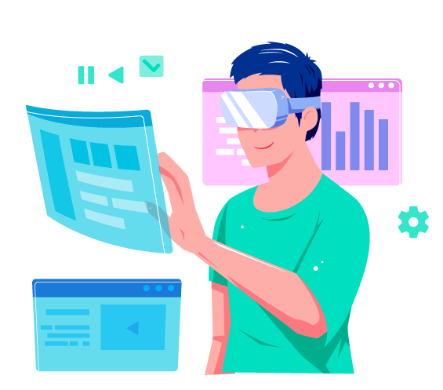
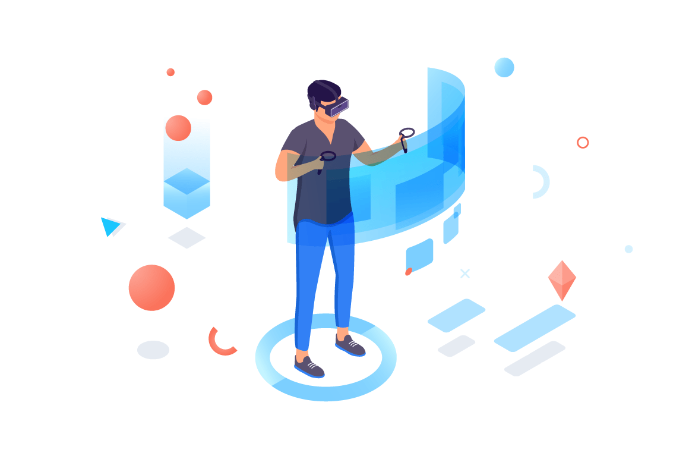
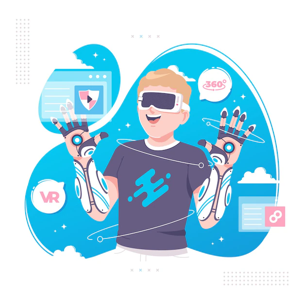
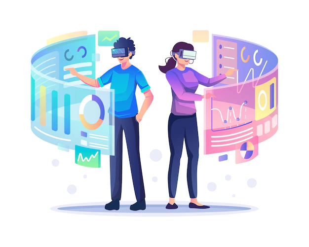

الواقع الافتراضي هو بيئة محاكاة تُنشئ بواسطة تقنيات حاسوبية لتقديم تجربة واقعية للمستخدم. يتيح الواقع الافتراضي للأفراد التفاعل مع بيئة افتراضية تمثل عالمًا ثلاثي الأبعاد، حيث يشعر المستخدم بأنه جزء من هذا العالم ويمكنه التفاعل معه بطرق متعددة.
تعتمد تجربة الواقع الافتراضي على استخدام أجهزة خاصة مثل نظارات الواقع الافتراضي ومستشعرات الحركة لتتبع حركة الرأس والجسم، مما يمكن المستخدم من التفاعل مع البيئة الافتراضية بشكل طبيعي.
يتم تحقيق الواقع الافتراضي عن طريق إعادة إنشاء البيئة والكائنات بها بشكل واقعي جدًا وتوفير تفاعل فعّال بين المستخدم وهذا العالم الوهمي. يتم استخدام الواقع الافتراضي في مجموعة واسعة من التطبيقات مثل الألعاب الفيديو، والتدريب العسكري، والتعليم، والطب، والتصميم الهندسي، والترفيه.
تهدف تكنولوجيا الواقع الافتراضي إلى إنشاء تجارب قريبة جدًا من تلك التي يمكن أن يختبرها الأفراد في العالم الحقيقي، مما يسمح بتوسيع إمكانيات التفاعل والتجربة في مجموعة متنوعة من المجالات.

العنصر الثاني | تابع: مقدمه
التاريخ و الأصول
تاريخ الواقع الافتراضي يمتد على مدى عدة عقود، وقد شهد تطورًا تقنيًا وابتكارات مستمرة. إليك نظرة عامة على التاريخ والأصول:
الستيروسكوب الرأسي (1960s):
يُعتبر الستيروسكوب الرأسي أحد أوائل الأجهزة التي ساهمت في تكوين فكرة الواقع الافتراضي. تم اختراعه في الستينيات وكان يستخدم لعرض صور ثلاثية الأبعاد للمستخدم.
العرض الرأسي (1980s):
في الثمانينيات، شهدنا تطورًا في تقنيات العرض الرأسي، حيث بدأت الشركات في تطوير نظم العرض ذات النوعية العالية.
مفهوم الواقع الافتراضي (1987):
اقترحت كلمة "الواقع الافتراضي" للمرة الأولى من قبل جاردني كونينغهام في عام 1987.
نظارات الواقع الافتراضي (1990s):
في التسعينيات، ظهرت نظارات الواقع الافتراضي، مع تطوير تكنولوجيا الشاشات ومستشعرات الحركة.
العصر الحديث (2000s إلى الآن):
في السنوات الأخيرة، شهد الواقع الافتراضي تقدمًا هائلًا، خاصةً مع تطور تكنولوجيا الشاشات والمعالجات. ظهرت نظارات الواقع الافتراضي مثل Oculus Rift وHTC Vive و PlayStation VR، وشجعت على انتشار أوسع في مجالات مثل الألعاب والترفيه.
التطبيقات المتنوعة:
استخدم الواقع الافتراضي في مجموعة واسعة من التطبيقات بما في ذلك الألعاب، والتدريب، والتعليم، والطب، والتصميم، والترفيع.
التطور المستمر:
يشهد الواقع الافتراضي حاليًا تطورات مستمرة مع التقدم التكنولوجي، مثل تحسين جودة الصورة، وزيادة سرعة التحديث، وتطوير تقنيات تتيح تفاعلًا أكثر فاعلية.

العنصر الثالث | تقنيات الواقع الأفتراضي
النظارات و الأجهزه
نظارات الواقع الافتراضي:
Oculus Rift:
تم تطويرها من قبل شركة Oculus VR وتُعتبر من بين أوائل نظارات الواقع الافتراضي التي حققت شعبية كبيرة.
HTC Vive:
تم تطويرها بالتعاون بين HTC وشركة Valve Corporation، وتتميز بنظام تتبع حركة لاسلكي وتفاعل دقيق.
PlayStation VR:
تم تصميمها لتكون متوافقة مع منصة PlayStation وتقدم تجربة الواقع الافتراضي لأجهزة PlayStation 4 وPlayStation 5.
نظارات الواقع المختلط (Mixed Reality):
Microsoft HoloLens: تعتبر من نظارات الواقع المختلط حيث تجمع بين الواقع الافتراضي والواقع الحقيقي لتمكين تفاعل مع البيئة المحيطة.
نظارات الواقع الافتراضي المحمولة:
Oculus Quest: تُعتبر نظارات محمولة وليست بحاجة إلى جهاز كمبيوتر خارجي، مما يسهل على المستخدمين الدخول في تجربة الواقع الافتراضي.
أجهزة تتبع الحركة:
تستخدم مستشعرات الحركة لتتبع حركات المستخدم وتحويلها إلى البيئة الافتراضية. مثال: مستشعرات Oculus Touch ومستشعرات HTC Vive.
الأجهزة الإضافية:
قد تتضمن أجهزة إضافية مثل أجهزة تحكم خاصة، وأحزمة لتوفير تفاعل أكثر واقعية.
الهواتف الذكية:
بعض النظارات تعتمد على الهواتف الذكية لعرض المحتوى الواقعي، مثل Google Cardboard.

العنصر الرابع | تابع: تقنيات الواقع الأفتراضي
البرمجيات والتطبيقات
في مجال برمجيات وتطبيقات الواقع الافتراضي، يوجد العديد من الفرص والاستخدامات. إليك بعض التطبيقات والمجالات التي يمكن تكامل الواقع الافتراضي فيها:
1. **تطبيقات التعليم:**
- إنشاء بيئات تعلم افتراضية لتسهيل تفاعل الطلاب مع المواد التعليمية.
- توفير تجارب علمية وجولات افتراضية لاستكشاف مفاهيم معقدة.
2. **تطبيقات التدريب والمحاكاة:**
- تقديم بيئات محاكاة وتدريب آمنة للمهنيين في مجالات مثل الطب والهندسة.
- إنشاء محاكيات لتدريب فرق الطوارئ والمنقذين.
3. **تصميم الألعاب:**
- تطوير ألعاب فيديو تستفيد بشكل كامل من تقنيات الواقع الافتراضي لتوفير تجارب ألعاب ممتعة وواقعية.
- إضافة ميزات تفاعلية وتحكم دقيق باستخدام أجهزة الواقع الافتراضي.
4. **تطبيقات الفن والتصميم:**
- إنشاء بيئات افتراضية لفنانين لتطوير وتحسين مهاراتهم.
- توفير أدوات للتصميم ثلاثي الأبعاد وتجربة الفن التفاعلي.
5. **الطب والرعاية الصحية:**
- استخدام الواقع الافتراضي في تدريب الأطباء والجراحين على الإجراءات الجراحية.
- تطوير تطبيقات للعلاج النفسي وتحسين تجربة المرضى.
6. **تطبيقات العقارات:**
- إنشاء جولات افتراضية للعقارات والمنازل لتوفير تجارب ملموسة للعملاء.
- توفير أدوات للمهنيين العقاريين لتصميم وتجربة المساحات.
7. **تطبيقات التسوق الافتراضي:**
- توفير تجارب تسوق افتراضية للمستخدمين لتصفح المنتجات وتجربتها قبل الشراء.
- إضافة ميزات تجريبية تسمح للعملاء بتجربة المنتجات بشكل ثلاثي الأبعاد.
8. **الاجتماعات والتعاون الافتراضي:**
- توفير بيئات افتراضية للاجتماعات عبر الإنترنت لتحسين التعاون بين الفرق العاملة عن بعد.
- إمكانية تجربة تفاعلات اجتماعية وحضور المؤتمرات بشكل افتراضي.
تظهر هذه الأمثلة كيف يمكن استخدام الواقع الافتراضي لتحسين وتوسيع نطاق التطبيقات والتكنولوجيا في عدة مجالات.
العنصر الخامس | تطبيقات الواقع الافتراضي
تطبيقات الواقع الافتراضي : الصناعه
تطبيقات الواقع الافتراضي في الصناعة قد ثبتت جدواها في تحسين الإنتاجية وتحسين عمليات التدريب وتصميم المنتجات. إليك بعض الاستخدامات الرئيسية في الصناعة:
1. **تصميم وتطوير المنتجات:**
- يمكن استخدام الواقع الافتراضي لإنشاء نماذج ثلاثية الأبعاد للمنتجات المستقبلية، مما يتيح للمهندسين والمصممين التفاعل معها وتقييمها قبل بدء الإنتاج الفعلي.
2. **تدريب الموظفين:**
- يمكن استخدام الواقع الافتراضي لتقديم تدريب فعال للموظفين في الصناعات المختلفة، مثل تدريب العاملين في المصانع على استخدام معدات معقدة أو خطوات إجراءات السلامة.
3. **الصيانة والإصلاح:**
- يسمح الواقع الافتراضي بتوفير تجارب محاكاة للفنيين والمهندسين للقيام بأعمال الصيانة والإصلاح، مما يقلل من خطأ الإنسان ويحسن كفاءة الصيانة.
4. **تحسين الإنتاجية:**
- يمكن استخدام الواقع الافتراضي لتحسين عمليات الإنتاج وتحسين كفاءة استخدام المعدات والموارد.
5. **تخطيط المصانع والمرافق:**
- يمكن للواقع الافتراضي مساعدة الشركات في تخطيط المصانع وتصميم المرافق، مما يساعد على تحسين تدفق العمل وتقليل الفاقد.
6. **التفاعل مع البيانات:**
- يمكن استخدام الواقع الافتراضي لتحويل البيانات الكبيرة إلى تجارب بصرية وتفاعلية، مما يسهم في فهم البيانات بشكل أفضل واتخاذ قرارات أفضل.
7. **التشييد وإدارة المشاريع:**
- يمكن استخدام الواقع الافتراضي في صناعة التشييد لتقديم لمحة واقعية للمشاريع الكبيرة قبل بدء البناء، مما يساعد في تحديد المشاكل المحتملة مبكرًا.
8. **مراقبة الجودة:**
- يُستخدم الواقع الافتراضي لفحص المنتجات ومراقبة الجودة بشكل أكثر دقة، مما يقلل من الأخطاء ويحسن جودة المنتج النهائي.
تلك مجرد بعض الاستخدامات الرئيسية، ويمكن تكامل تقنيات الواقع الافتراضي بشكل أوسع في مختلف جوانب الصناعة لتحسين الكفاءة والابتكار.

العنصر السادس | تابع: تطبيقات الواقع الافتراضي
تطبيقات الواقع الافتراضي : الألعاب و الترفيه
لعاب الفيديو:
تجارب الألعاب الواقعية: يوفر الواقع الافتراضي تجارب ألعاب أكثر واقعية وتفاعلية. يتمكن اللاعبون من الانغماس في عوالم افتراضية ثلاثية الأبعاد والتفاعل مع البيئة باستخدام نظارات الواقع الافتراضي وأجهزة تحكم مخصصة.
تجربة الواقع الافتراضي الاجتماعية: يمكن للواقع الافتراضي أن يخلق ألعابًا تتيح للاعبين التفاعل مع بعضهم البعض بشكل واقعي عبر الإنترنت، مما يضيف عنصرًا اجتماعيًا إلى تجارب الألعاب.
محتوى إضافي وتجارب فريدة: يمكن للواقع الافتراضي أن يوفر تجارب جديدة للاعبين من خلال إضافة محتوى إضافي يستفيد من التفاعل الكامل مع البيئة الواقعية.
الأفلام والترفيه الرقمي:
تجارب سينمائية محسنة: يتيح الواقع الافتراضي للمشاهدين التفاعل مع الأفلام بطرق جديدة. يمكنهم الانغماس في قصص وعوالم ثلاثية الأبعاد.
تجربة المحتوى الافتراضي: يتيح الواقع الافتراضي إنتاج محتوى فريد وتفاعلي، مثل أفلام قصيرة أو تجارب تفاعلية.
تطبيقات الواقع الافتراضي في صناعة الألعاب السينمائية: يمكن استخدام الواقع الافتراضي في صناعة الأفلام لإنشاء تأثيرات بصرية أكثر واقعية وتحسين تجربة المشاهد.
الألعاب الرياضية وتجارب المشجعين:
تجارب رياضية محسنة: يمكن استخدام الواقع الافتراضي لإنشاء تجارب رياضية وتدريب لاعبين وحتى للمشاهدين لتفاعل مع الأحداث الرياضية بطرق جديدة.
تجارب المشجعين الواقعية: يمكن للواقع الافتراضي أن يوفر للمشجعين تجارب حيوية وواقعية خلال المباريات، مثل جلوس في المدرجات الرياضية الرقمية.